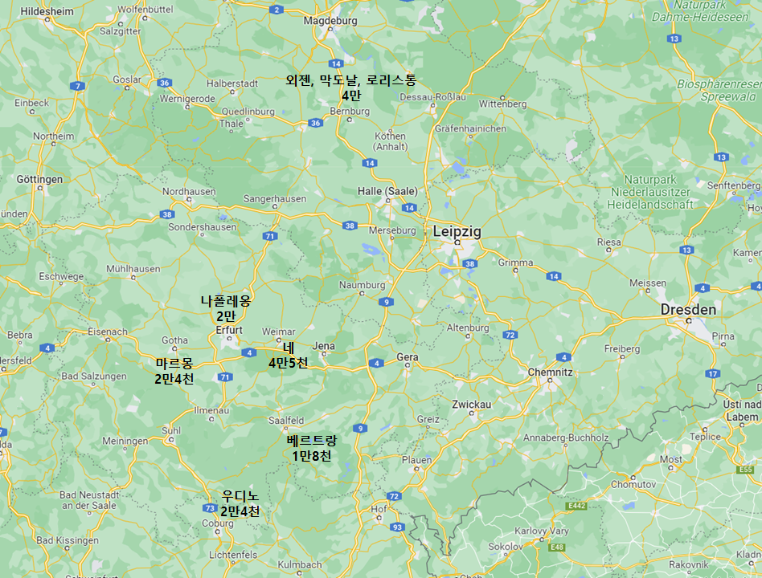
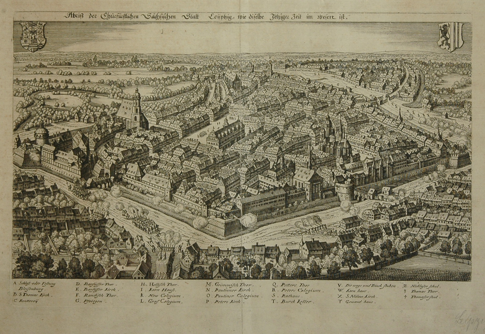
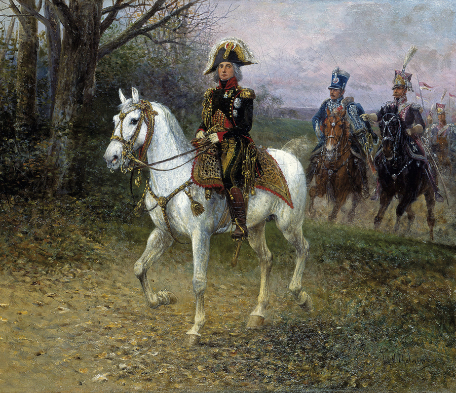
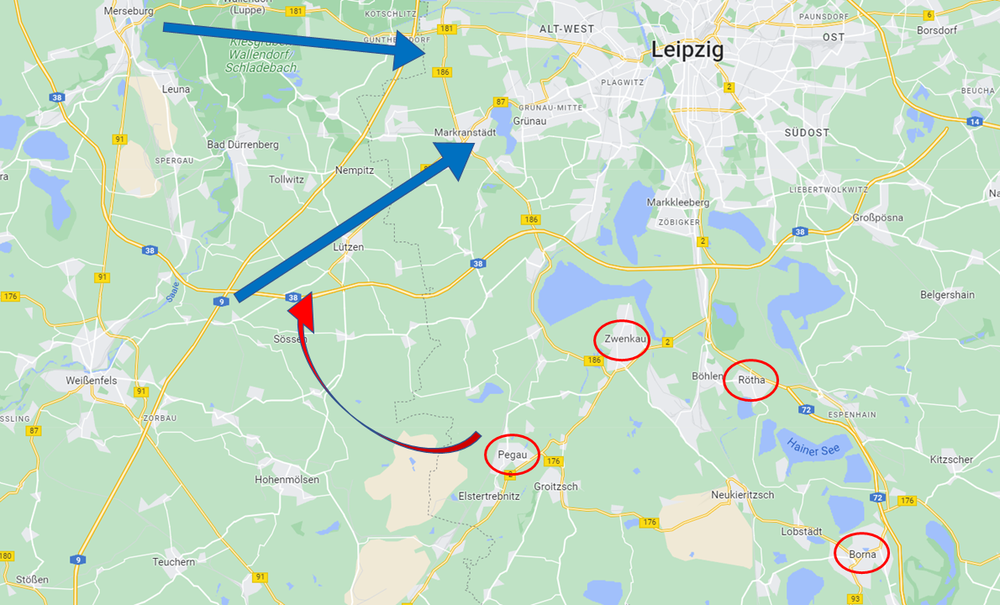

뤼첸 전투 하루 전 상황 - 나폴레옹, 퍽치기 위기 일발
게시: 2022-08-29T06:30:57+09:00
나폴레옹은 4월 24일 마인츠를 떠나 약 250km의 길을 밤에도 쉬지 않고 마차로 달려 그 다음 날인 25일 저녁 9시에 에르푸르트에 도착했습니다. 거기에 집결한 근위대와 합류하기 위해서였습니다. 그 동쪽 약 20km 지점에 있는 바이마르(Weimar) 주변에는 4만5천의 막강 병력을 자랑하는 네 원수의 제3 군단이 포진해 있었고, 에르푸르트 남동쪽 약 50km 지점의 잘펠트(Saalfeld) 일대에는 베르트랑(Henri Gatien Bertrand)의 1만8천에 달하는 제4 군단이 있었습니다. 2만4천이 배속된 우디노의 제12 군단도 에르푸르트 남쪽 90km 지점인 코부르크(Coburg)에 주둔했고, 역시 2만4천인 마르몽의 제6 군단은 에르푸르트 서쪽 약 25km 지점인 고타(Gotha)에 도착해 있었습니다. 근위대까지 합하면, 에르푸르트 일대에 전개된 야전군은 총 14만5천의 엄청난 대군이었습니다.

(4월 25일의 프랑스군 전개 상황입니다. 저기서 외젠의 엘베 방면군은 막도날의 제11 군단 1만8천, 그리고 로리스통의 제5 군단 1만6천이 주력이었습니다.) 문제는 나폴레옹의 제1차 목표인 외젠과의 합류였습니다. 러시아 원정군의 잔존 병력, 즉 엘베 방면군이라고 불리던 외젠의 군단 4만은 에르푸르트 북동쪽 약 145km 지점인 마그데부르크 남쪽 일대에 전개해 있었습니다. 4월 25일 하루를 병력 점검과 휴식으로 보낸 나폴레옹은 26일 아침부터 참모장 베르티에를 통해 부지런히 명령서를 날리기 시작했습니다. 이날 오후까지 계속 이어진 명령서들의 내용은 결국 나움부르크(Naumburg)와 도른부르크(Dornburg), 예나 등 잘러 강변의 도시들로에 진주하여 잘러 강의 주요 다리를 확보하라는 것이었습니다. 이와 함께, 외젠에게는 네의 제3 군단과 접촉할 수 있도록 할러(Haale) 방면으로 내려올 것을 명령했습니다. 나폴레옹이 그 동안 잘러 강 도하를 미루고 있었던 것은 한꺼번에 대군을 출격시켜 머릿수로 연합군을 압도한다는 것이었는데, 이젠 충분한 병력이 모인 셈이었습니다. 게다가, 나폴레옹에게 속속 들어오는 오스트리아 방면 소식은 더 이상의 미적거림이 허락하지 않았습니다. 비는 일단 피하고 볼 일이라며 러시아군을 피해 슈바르첸베르크의 오스트리아군을 따라 보헤미아로 후퇴했던 그랑다르메의 제5 군단, 즉 포니아토프스키의 폴란드 군단 소식이 들려왔는데, 별로 좋지 않았습니다. 오스트리아군이 여태까지의 전우였던 폴란드군을 무장해제 시켰던 것입니다. 그나마 폴란드군을 포로로 억류하지는 않았고 작센이나 바이에른 등 원하는 곳으로 보내주긴 했지만, 이건 결코 합스부르크 황가의 사위인 나폴레옹에 대해 긍정적인 제스처는 아니었습니다. 원래부터 나폴레옹은 결코 오스트리아를 믿지 않았으므로 에르푸르트 남쪽 160km 지점인 뷔르츠부르크(Würzburg)에 역전의 노장 오쥬로를 보내 바이에른 병력으로 5개 사단을 편성하고 있었습니다. 이 군단은 혹시라도 있을 수 있는 오스트리아군의 침공으로부터 바이에른을 방어하기 위한 감시군단이었습니다. 그러나 고작 5개 사단으로는 오스트리아에게 확실한 경고가 되지 못했습니다. 오스트리아에게 확실한 메시지를 보내기 위해서는 오직 하나, 신속한 승리가 필요했습니다. 이런 사정으로, 나폴레옹은 28일 새벽 드디어 네 등에게 명령서를 보내 잘러 강을 도하하도록 하고 외젠에게는 라이프치히에서 만나자는 명령서를 보냈습니다.

(라이프치히는 작센의 수도인 드레스덴보다 더 큰 도시로서 지금도 인구 60만으로 독일에서 8번째로 큰 도시이며, 동독 시절 베를린에 이어 동독 제2위의 도시였습니다. 그림은 1632년, 30년 전쟁 와중 가장 중요한 전투라고 할 수 있는 뤼첸 전투 직전 신성로마제국의 발렌슈타인이 라이프치히를 공격하여 손쉽게 함락시키고 있는 모습입니다. 그림에서도 보이듯이 라이프치히는 성벽과 해자가 있기는 하지만 보방식 성벽을 갖춘 견고한 요새 도시라고는 할 수 없었습니다.) 나폴레옹이 라이프치히를 외젠과의 합류 지점으로 선택한 것은 3가지 이유에서였습니다. 먼저, 앞서 여러번 언급한 대로 나폴레옹은 기병 부족으로 인해 정찰 자산이 없어서 프로이센-러시아군의 동태를 잘 모르고 있었습니다. 따라서 먼저 할 수 있는 것인 외젠과의 합류부터 하기로 한 것입니다. 둘째 이유는 라이프치히는 작센의 제1 도시로서 그 일대 교통망의 허브라는 점이었습니다. 따라서 외젠과 가장 쉽고 무난하게 합류하려면 당연히 라이프치히가 적절한 위치였습니다. 마지막 이유는 이 움직임으로 혹시 프로이센-러시아 연합군을 분산시킬 수도 있다는 약간의 기대였습니다. 라이프치히를 거쳐 계속 북동쪽으로 엘베 강을 건너 진격하면 바로 베를린이었습니다. 프랑스군이 베를린을 향한다면 수도를 지키려는 프로이센군은 수도를 지키려 하겠지만 본국과의 교통로 확보가 가장 중요했던 러시아군은 그대로 드레스덴-브레슬라우-칼리쉬 도로망을 따라 후퇴할 것이라고 나폴레옹은 기대했습니다. 그렇게 프로이센-러시아 연합군이 둘로 쪼개진다면 나폴레옹은 그야말로 각개격파를 노릴 수 있었습니다. 혹시 연합군이 그런 얕은 수에 넘어가지 않고 함께 동쪽으로 후퇴한다면 나폴레옹은 그들을 추격하여 그대로 오데르 강변까지 내달릴 작정이었습니다. 프랑스군의 진격은 순조로왔습니다. 여기저기 소규모로 배치되어있던 프로이센군과 교전이 벌어지기는 했지만, 압도적인 수적 우위를 가진 프랑스군은 4월 29일 바이센펠스(Weißenfels)를 점령했고, 외젠 휘하 병력도 같은 날 머세부르크(Merseburg)을 점령하고 30일 아침에는 할러까지 손에 넣었습니다. 나폴레옹도 30일 바이센펠스에 도착했고, 외젠도 머세부르크에 당도하여 마인 방면군과 엘베 방면군은 실질적으로 합류에 성공했습니다. 다음 날인 5월 1일, 나폴레옹의 선봉인 네의 부대는 빈칭게로더의 러시아군을 추격하여 바이센펠스에서 뤼첸으로 진격하는 도중 러시아군과 충돌했습니다. 거의 대부분이 18세 정도의 소년 신병들로 이루어진 네의 부대는 이것이 사실상 첫 실전이었는데도 무척 꿋꿋하게 러시아군의 맹포격을 받아내며 싸움에 임하여 네로부터 찬탄을 자아냈습니다. 빈칭게로더의 러시아군은 이들에게 밀려 뤼첸까지 후퇴했다가 여기서도 밀려나 동쪽으로 퇴각했습니다. 다만 이 날 잘러 강의 지류인 리파흐(Rippach) 일대를 정찰하던 베시에르(Jean-Baptiste Bessières) 원수가 러시아군의 빗나간 포격에 직격당하는 사건이 벌어졌습니다. 러시아군의 대포알은 바로 옆의 돌벽에 부딪힌 뒤 튕겨나와 베시에르의 가슴을 관통했고 베시에르는 그야말로 즉사했습니다. 나폴레옹은 그의 심복이자 친구에 가까왔던 그의 죽음에 크게 슬퍼 했으나, 이 소식을 들은 다른 원수들은 그 정도면 고통도 없고 아주 영광스러운 훌륭한 죽음이라고 생각했다고 합니다. 실력에 비해 나폴레옹의 총애를 받던 그를 질시하는 장군들이 많았기 때문이었습니다.

(1813년 근위대 소속 폴란드 기병들을 이끌고 정찰 중인 베시에르입니다. 나폴레옹보다 1살 많았던 그는 졸병으로 시작하여 스스로의 힘으로 대위 계급까지 오른 뒤, 1796년 이탈리아에서 나폴레옹의 눈에 띄었습니다. 덕분에 이집트에서 나폴레옹이 원정군을 버리고 홀로 귀향할 때 그와 같은 배를 탄 소수의 심복 중 하나가 되었습니다. 베시에르는 원래 귀족 출신이 아니라 시민계급이라고 할 수 있는 내과의사의 아들이었습니다만, 나폴레옹의 부하들 중 누구보다도 귀족티를 팍팍 내던 사람이었습니다. 이 그림에서도 보이듯 당시엔 이미 낡은 헤어스타일이던 분가루를 뿌린 머리카락을 고집했습니다. 원래 코르시카 하급 귀족이자 실력파 엘리트 출신이었던 나폴레옹도 그런 베시에르를 좋아하여 1807년 알렉산드르와 만났던 틸지트 회담에도 외모가 귀족스러운 그를 콕 집어 대동시켰습니다. 베시에르의 죽음을 슬퍼한 나폴레옹은 그의 유족들을 세심히 보살폈는데, 알고 보니 베시에르는 혼외 불륜 상대인 애인에게 엄청난 돈을 쓰는 바람에 빚을 꽤 많이 지고 있었습니다. 나폴레옹은 그 빚도 다 갚아주었다고 합니다. 베시에르의 아들 나폴레옹 베시에르(Napoléon Bessières)는 나중에 복위한 루이 18세로부터도 아버지의 작위인 공작 지위를 그대로 인정받았습니다.) 슬픔에 젖은 나폴레옹은 그 날 저녁 뤼첸에 당도하여 사령부를 차렸습니다. 그는 아직 비트겐슈타인의 본대가 어디에 있는지 전혀 몰랐고, 막연히 연합군 본대는 라이프치히 동쪽 어딘가에 있을 것라고 생각했습니다. 다만 그는 연합군의 병력은 많아 봐야 10만이 되지 않을 것이며, 그가 그 일대에 펼쳐놓은 14만 대군에 비해 크게 열세라는 것을 알고 있었습니다. 그나마 그날 저녁 여기저기서 연합군에 대한 정보가 들어오기 시작했습니다. 라이프치히에 있던 빈칭게로더의 러시아군은 바로 남쪽의 츠벤카우(Zwenkau)로 후퇴했고, 남동쪽으로 더 떨어진 보르나(Borna)에 최소 1개 군단이 있었으며, 라이프치히 45km 남동쪽인 로슐리츠(Rochlitz)에는 짜르 알렉산드르가 직접 나타났다는 것이었습니다. 다음 날인 5월 2일 아침 나폴레옹이 라이프치히를 향해 출발할 때는 비트겐슈타인이 전체 연합군의 총사령관이 되었다는 정보도 들어왔습니다. 이 모든 정보를 종합해보면 연합군은 나폴레옹의 진격에 혼비백산 밀려나고 있는 것이 확실해 보였습니다. 나폴레옹은 5월 2일 아침, 연합군을 추격하기 위해 츠벤카우로 향하지 않았고 더 큰 군단이 주둔하고 있다는 보르나로 가지도 않았습니다. 태평스러웠던 그는 외젠 휘하의 부대들, 즉 막도날의 제11 군단을 점검하고 로리스통(Lauriston)의 제5 군단이 라이프치히로 행군하는 모습을 지켜 보았습니다. 그는 연합군이 얼마나 가까운 곳에서 자신의 뒤통수를 노리고 있는지 전혀 몰랐습니다. 전날인 5월 1일 저녁 6시, 비트겐슈타인은 다음날 나폴레옹의 주력 부대가 뤼첸을 향해 행군하도록 내버려둔 뒤 그의 오른쪽 후위를 강하게 습격할 것이라고 짜르에게 보고서를 쓰고 있었습니다. 한밤중에 보르나에서 이 보고를 받은 알렉산드르는 마침 그와 함께 있던 프로이센 국왕 빌헬름 프리드리히와 함께 새벽 2시에 말을 달려 이 희대의 전투를 직접 두 눈으로 목격하러 말을 달렸습니다. 물론 알렉산드르는 절대 구경만 할 사람은 아니었습니다.

(아무리 나폴레옹이 매복을 모르는 상태라고 하더라도, 과연 비트겐슈타인의 뒤통수 퍽치기 작전은 계획대로 잘 돌아갈까요?) Source : The Life of Napoleon Bonaparte, by William Milligan Sloane Napoleon and the Struggle for Germany, by Leggiere, Michael V https://en.wikipedia.org/wiki/Henri_Gatien_Bertrand https://en.wikipedia.org/wiki/Jean-Baptiste_Bessi%C3%A8res https://en.wikipedia.org/wiki/Leipzig